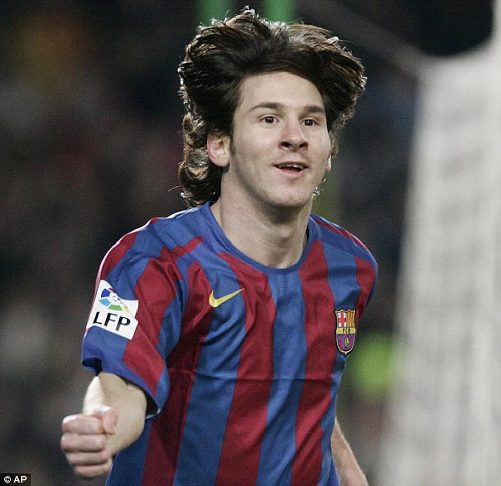
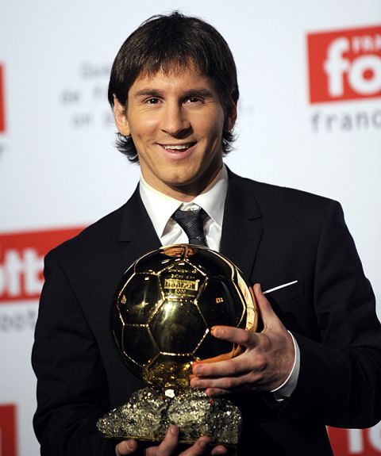
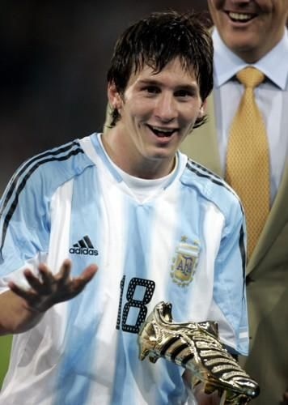
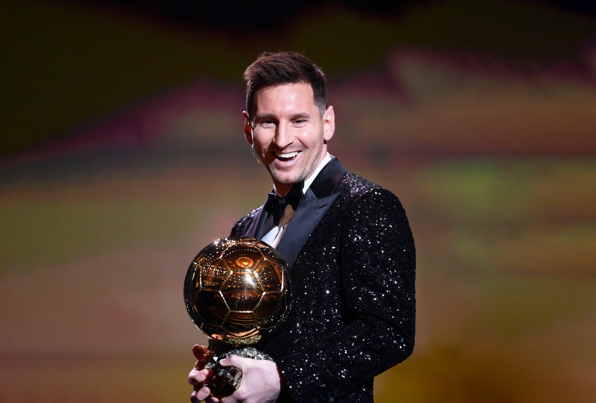

|  | Messi debutó en el primer equipo del FC Barcelona en diciembre de 2003, en un partido amistoso ante el FC Porto entrenado por José Mourinho, aunque su debut en partido oficial llegó al año siguiente, en la temporada 2004/2005, en un partido de liga ante el RCD Espanyol, convirtiéndose en el jugador más joven del Barcelona en jugar un partido de la Primera División de la Liga Española (16 años). |
Después de dos temporadas sin éxito, el Barcelona necesitaba una reforma, lo que provocó la salida de Rijkaard y la llegada de Pep Guardiola como entrenador. Tras la marcha también de Ronaldinho, Messi recibió la camiseta con el número 10. Firmó un nuevo contrato 2008 con un salario anual de 7 millones de euros, lo que lo convirtió en el jugador mejor pagado del club. De cara a la nueva temporada, una de las principales preocupaciones seguía siendo sus frecuentes lesiones musculares, que lo habían dejado al margen durante un total de ocho meses entre 2006 y 2008. Para solucionar el problema, se implementaron nuevos regímenes de nutrición y sueño y el Barcelona aceptó que eligiera un kinesiólogo y un fisioterapeuta personales, que serían supervisados por el plantel médico del club. Como resultado, Messi permaneció prácticamente libre de lesiones durante los siguientes cuatro años. A pesar de sus lesiones a principios de año, en 2008 alcanzó el segundo puesto en el Balón de Oro y el premio al Jugador Mundial de la FIFA, en ambas ocasiones detrás de Cristiano Ronaldo.
| Messi con la 10 |
|
|  | La temporada 2008/2009 se consagró como el mejor jugador del mundo y el Barcelona conseguiría el triplete. Messi anotó un total de 38 goles. En 2009/2010 consiguió anotar 47 goles en la temporada, de los cuales 34 fueron en la competición de liga. Ganó la Bota de Oro igualando el registro goleador de Ronaldo en la temporada 1996/1997. |
El 7 de marzo de 2012, al anotar cinco de los siete goles con los que el Barcelona venció como local al Bayern Leverkusen en el partido de vuelta por los octavos de final de la Liga de Campeones 2011-12, Messi pasó a ser el primer jugador en convertir esa cantidad de goles en la historia de ese torneo. A medida que se convirtió en una combinación de un número 8 (un creador), un 9 (anotador) y un 10
(asistente), Messi anotó una marca sin precedentes de 73 goles y 29 asistencias en todas las competiciones de clubes durante la temporada 2011-12, en la que realizó un hat-trick o más en diez ocasiones. Comenzó la campaña ayudando al Barcelona a ganar la Supercopa de España y la Supercopa de Europa. Terminó la temporada como máximo goleador de la liga en España y Europa por segunda vez, con 50 goles, un récord de La Liga, mientras que sus 73 goles en todas las competiciones superaron los 67 de Gerd Müller en la temporada 1972-73 de la Bundesliga, por lo que pasó a ser el máximo goleador por temporada de clubes.
Durante la segunda mitad de 2012 Messi ayudó al club a lograr su mejor comienzo de temporada en la Liga, con 55 puntos acumulados en la mitad de la competencia, un récord en el fútbol español. Al anotar un doblete el 9 de diciembre contra el Real Betis, alcanzó los 86 goles (74 en su club y 12 con la selección) y rompió así dos récords históricos: el de César Rodríguez de 190 goles en liga, con lo que se convirtió en el máximo goleador de todos los tiempos del Barcelona en esa competición (192 en 228 partidos), y el de Gerd Müller de más goles en un año calendario, al superar sus 85 goles marcados en 1972 en el Bayern de Múnich (72) y Alemania Occidental (13). El jugador alemán, en una entrevista con el canal Sport1, lo felicitó por haber batido su récord de cuarenta años, por lo que Messi le envió una camiseta del Barcelona con el número 10, en la que se leía "Para Gerd Müller/Mi respeto y admiración/Un abrazo".
Con esos 86 tantos, ingresó en el Guinness World Records por el número de goles marcados en un año calendario. Messi amplió ese resultado en los últimos partidos de La Liga y Copa del Rey, de manera que terminó el año con 91 goles. Como favorito, volvió a ganar el Balón de Oro, por lo que es el único jugador en la historia en ganar ese premio en cuatro ocasiones seguidas. Por otro lado, formó parte del FIFA/FIFPro World XI por sexto año consecutivo.
| Año | Fecha | Logros | Récords |
| 2018 | - | Capitán | - |
| 12 ade agosto | Primer titulo capitán(Supercopa de España) | - | |
| 2019 | 17 de febrero | Primer futbolista y primer argentino en recibir Premio Laures | - |
| 27 de abril | Campeón de La liga | - | |
| 30 de abril | Le conceden la Cruz San Jordi | - | |
| 19 de mayo |
|
Ganar 3 botas de oro consecutivas | |
| 23 de septiembre | Premio The Best | - | |
| 25 de noviembre | UEFA: incluye el mejor equipo del siglo XXI | - | |
| 2 de diciembre | Sexto balón de oro | Máximo ganador | |
| 2020 | 20 de mayo | Séptimo pichichi | Supera a Zarra como máximo ganador |
Tras el creciente descontento De Messi con la dirección del Barcelona dentro y fuera del campo, el club anunció que el jugador le había enviado "un documento expresando su deseo de irse" el 25 de agosto de 2020. El 26 de agosto, el director deportivo del Barcelona, Ramon Planes, reiteró el deseo del club de "construir un equipo alrededor del jugador más importante del mundo" y afirmó que Messi solo podría irse si un comprador pagara su cláusula de rescisión de 700 millones de euros. El 4 de septiembre, Jorge Messi emitió un comunicado en respuesta a La Liga en el que afirmaba que la cláusula de rescisión "no es válida cuando la rescisión del contrato es por decisión unilateral del jugador desde el final de la temporada 2019-20", según consta en el contrato de Messi con el Barcelona. Esa noche, en una entrevista con Goal, Messi anunció que continuaría en el Barcelona durante el último año de su contrato. Esto dejó al jugador con dos opciones: quedarse o ir a la corte contra el club, pero afirmó: "Nunca iría a juicio contra el club de mi vida".
El 17 de septiembre, se cumplieron veinte años de su llegada al Barcelona. El 26 del mismo mes, jugó ante el Villarreal, donde debutó con un gol por la primera fecha de La Liga, convirtiéndose así, junto a Xavi Hernández y Carles Rexach, en el jugador con más temporadas en el club (17). El 7 de noviembre, Messi se convirtió en el máximo goleador de la historia del fútbol de primera división en una misma liga, y alcanzó a Josef Bican, que tenía 447 goles. El 14 de diciembre, se cumplían veinte años de su primer contrato con el club. El 17 de diciembre igualó así los 643 goles de Pelé con el Santos de Brasil y se convirtió en el máximo goleador en la historia del fútbol en un mismo club. El jugador brasileño lo felicitó en Instagram por el récord y por su trayectoria en el club, a la vez que le expresó su admiración.
El 17 de abril el Barcelona se consagró campeón de la Copa del Rey ante el Athletic, siendo en ese instante el último título de Messi. El 16 de mayo, jugó su último partido de la temporada ante el Celta de Vigo en el Camp Nou y así siendo su último partido con el barca. Koeman le dio permiso para adelantar sus vacaciones, por lo que no jugó ante el Eibar. Recibió el Trofeo Pichichi del campeonato por octava vez, y superó así a Eusebio y Gerd Muller como más veces goleador en las ligas europeas. El 30 de junio finalizó el contrato que lo vinculaba con el club. El 5 de agosto de 2021, el Barcelona anunció que no podía renovar a Messi, pues hacerlo implicaba sobrepasar el tope de gastos que le permitía la liga española. En una conferencia en las instalaciones del club, el jugador afirmó: "Lo di todo por este club, desde el primer día que llegué hasta el último, nunca imaginé tener que despedirme porque no lo pensaba. Hice todo lo que pude para quedarme y no fue posible".
| Partidos | 778 |  |
|||
| Goles | 672 | ||||
| Promedio | 0.86 | ||||
| Dobletes: 137 | Hat-trick: 42 | Poker: 6 | Repoker: 1 | ||
| Asistencias | 268 | ||||
| Promedio | 0.34 | ||||
| Titulos | 35 | ||||
| Premios | 78 | ||||
|  | El 2 de agosto de 2005, Pekerman convocó por primera vez a Messi para jugar con la selección absoluta. El jugador debutó el 17 de agosto en un amistoso con Hungría, en el que entró al campo en el minuto 63 por Lisandro López, pero solo 47 segundos después fue expulsado por el árbitro Markus Merk tras unos agarrones con el defensor Vilmos Vanczák. El 3 de septiembre de 2005, jugó su primer partido oficial en las eliminatorias del Mundial 2006 contra Paraguay. En un amistoso contra Catar el 16 de noviembre, dio su primera asistencia, que le permitió a Riquelme abrir el marcador en la victoria por 3-0, y el 1 de marzo de 2006 metió su primer gol en un amistoso contra Croacia en el estadio St. Jakob Park de Basilea, que Argentina perdió 3-2. |
El 5 de junio de 2007, en un amistoso contra Argelia, Messi convirtió su primer doblete con la selección. Messi llegó con una gran presión al Mundial de Sudáfrica, debido a que varios lo consideraban el sucesor de Maradona y su campaña en el Barcelona lo perfilaba para ser la gran figura del mundial. Para el siguiente encuentro contra Grecia, y ante la ausencia de Mascherano en el plantel, Maradona designó capitán a Messi que, con veintidós años, se convirtió en el argentino más joven en cumplir ese papel en un mundial. El 1 de julio de 2011, Messi jugó el primer partido de la Copa América, celebrada en Argentina, contra Bolivia. El encuentro finalizó 1-1. El 6 de julio, tras el empate contra Colombia en el Estadio Brigadier General Estanislao López de Santa Fe, Messi recibió grandes críticas por parte de los hinchas argentinos, que le reclamaban que jugara como lo hacía en el Barcelona. Las críticas disminuyeron después de que Messi diera dos asistencias en el partido contra Costa Rica el 11 de julio, que Argentina ganó por 3-0 con dos goles de Agüero y uno de Di María y que le permitió clasificar a la segunda fase. En septiembre de 2011, el nuevo DT, Alejandro Sabella, designó capitán a Messi en reemplazo de Mascherano. El jugador debutó en su nuevo rol en un amistoso contra Venezuela jugado en el estadio Yuba Bharati Krirangan de Calcuta que Argentina ganó 1 a 0.
| Participación en Mundiales | |||
| Sede | Goles | Asistencias | Premio |
| Alemania 2006 | 1 | 1 | - |
| Sudàfrica 2010 | - | - | - |
| Brasil 2014 | 4 | 1 |
|
| Rusia 2018 | 1 | - | - |
| Total: 6 Goles 2 Asistencias | |||
| Participación en Copa América | |||
| Sede | Goles | Asistencias | Premios |
| Venezuela 2007 | 2 | 1 | Mejor jugador joven del Torneo |
| Argentina 2011 | - | 3 | - |
| Chile 2015 | 1 | 3 | Mejor jugador del torneo |
| Estados Unidos 2016 | 5 | 4 | - |
| Brasil 2019 | 1 | 1 | - |
| Brasil 2021 | 4 | 5 |
|
| Total: 13 Goles 17 Asistencias | |||
A lo largo de su carrera en la selección, tuvo varios tropiezos, lo que más quería era ganar un titulo con la Selección Absolouta, ya había ganado en las categorías inferiores, pero en la mayor se le negaba esa oportunidad. En total, hasta el momento disputó 5 finales internacionales: Copa Ámerica (Venezuela 2007) Argentina perdió ante Brasil 3-0, luego llegaría otra oportunidad 7 años después, Messi disputaría la final del Mundial (Brasil 2014) el 13 de julio, Argentina jugó la final con Alemania en el estadio Maracaná. Tras un empate 0-0, se jugó un tiempo suplementario en el que Mario Götze anotó un gol en el minuto 114. Alemania fue campeón y Argentina, subcampeón, una derrota muy dolorosa para Messi. Un año después disputaría la final de la Copa América (Chile 2015) el equipo argentino empató 0-0 en 120 minutos, pero perdió 4-1 en los penales.
Seguido en el otro año tendría su revancha en la Copa América Centenario (Estados Unidos 2016) el 26 de junio, Argentina se enfrentó nuevamente con Chile en la final. Tras un empate sin goles en 120 minutos, ganó la selección chilena por penales. A pesar de su muy buen desempeño en toda la competición y de haber jugado un buen partido, Messi falló su penal, el primero de la serie. Messi entre lágrimas, rompió el llanto tras haber perdido otra final, ya que esta era la Tercera consecutiva que perdía con su selección, la derrota más dolorosa en su carrera. Finalmente llegó otra oportunidad para él, en la Copa América (Brasil 2021) el 10 de julio, Argentina derrotó a Brasil en el Maracaná por 1-0 en la final. En su quinta final internacional, Messi consiguió su primer título, el primero de Argentina desde la Copa América 1993 y la decimoquinta Copa América en su historia, quitando esa maldición que tenía de no poder ganar un titulo con su selección, Messi cumplió su sueño más grande en su carrea.
| Messi con la Copa América |
 |
El PSG (Paris Saint-Germain Football Club) informó que la rueda de prensa de presentación de Messi como nuevo jugador del equipo para el 11 de agosto de 2021 a las 11.00 horas en el auditorio del Parque de los Príncipes. Se liga al club con un contrato para las dos próximas temporadas, con otra opcional. Su salario estará entre los 35 y los 40 millones de euros netos por año, incluido el contrato laboral y el de derechos de imagen y usaría el dorsal 30, el mismo con el que debutó en el Barcelona.
El 29 de ese mismo mes, jugó su primer partido con el equipo ante el Stade de Reims, por la cuarta fecha de la Ligue 1. Ingresó al campo en el minuto '65. El partido acabó 0-2 a favor del equipo parisino. El 28 de septiembre, marcó su primer gol con el PSG, en la segunda jornada del Grupo A de la Liga de Campeones ante el Manchester City de Guardiola, con una victoria de los parisinos en el Parque de los Príncipes por 2-0. El 19 de octubre, marcó su primer doblete. Fue por el tercer partido de clasificación en la Liga de Campeones, ante el Leipzig de Jesse Marsch, con una victoria del equipo local por 3-2 en París. El 20 de noviembre, por la décimo cuarta fecha, anotó su primer gol en la Ligue 1. El marcador final fue 3-1 ante el Nantes.
|  | El 29 de ese mes, ganó su séptimo Balón de Oro. El 7 de diciembre, en la última jornada de clasificación para octavos de final de la Liga de Campeones, anotó otro doblete para la victoria de su equipo por 4-1 ante el Brujas. En ese partido, igualó a Cristiano Ronaldo como jugador que a más equipos (38) les ha convertido gol en la competición europea y, con 758 goles, superó a Pelé. El 17 de enero, fue incluido en el FIFA/FIFPro World XI por decimoquinta vez consecutiva. |
| Partidos (actualmente) | 26 |  |
|||
| Goles | 7 | ||||
| Promedio | 0.27 | ||||
| Dobletes: 2 | |||||
| Asistencias | 10 | ||||
| Promedio | 0.38 | ||||
| Titulos | 0 | ||||
| Premios | 1 | ||||